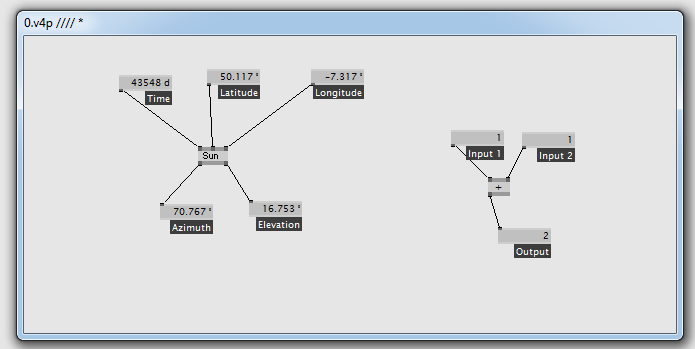
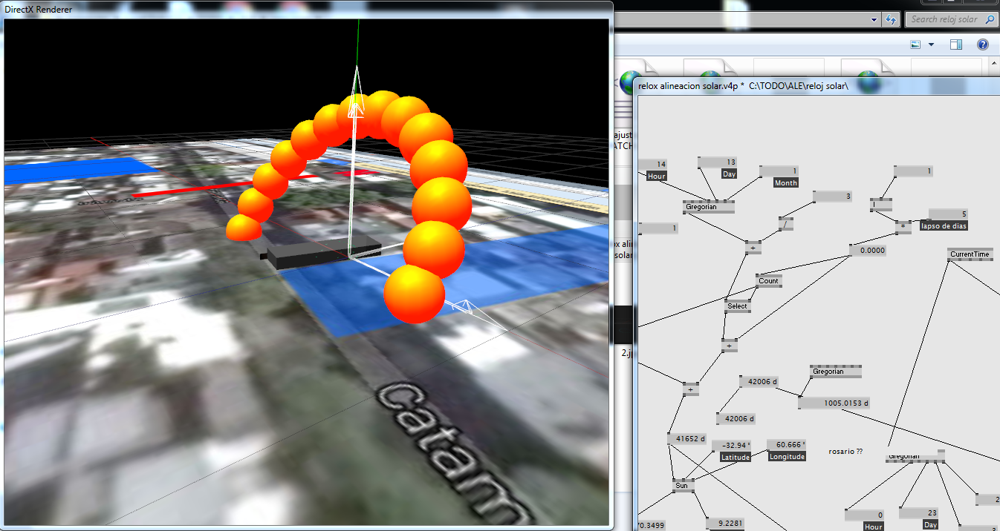
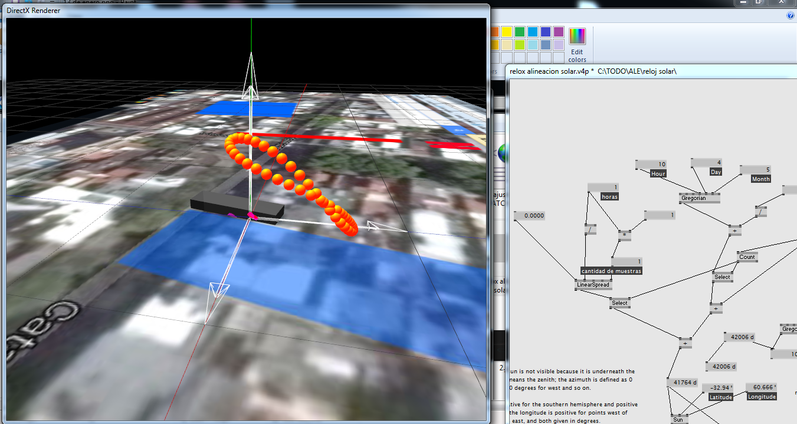
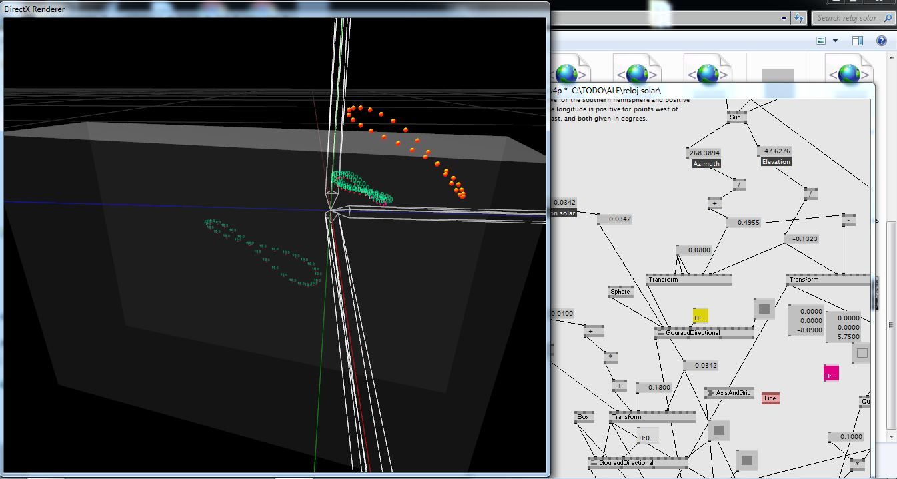
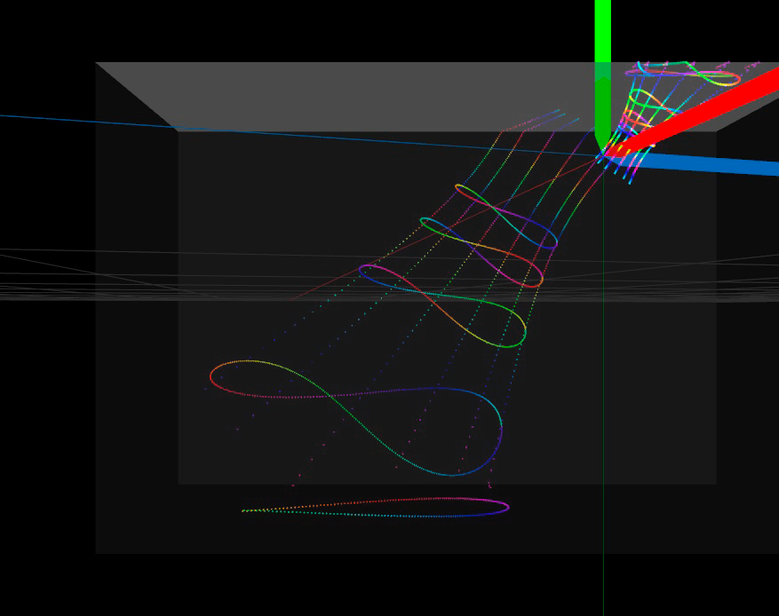
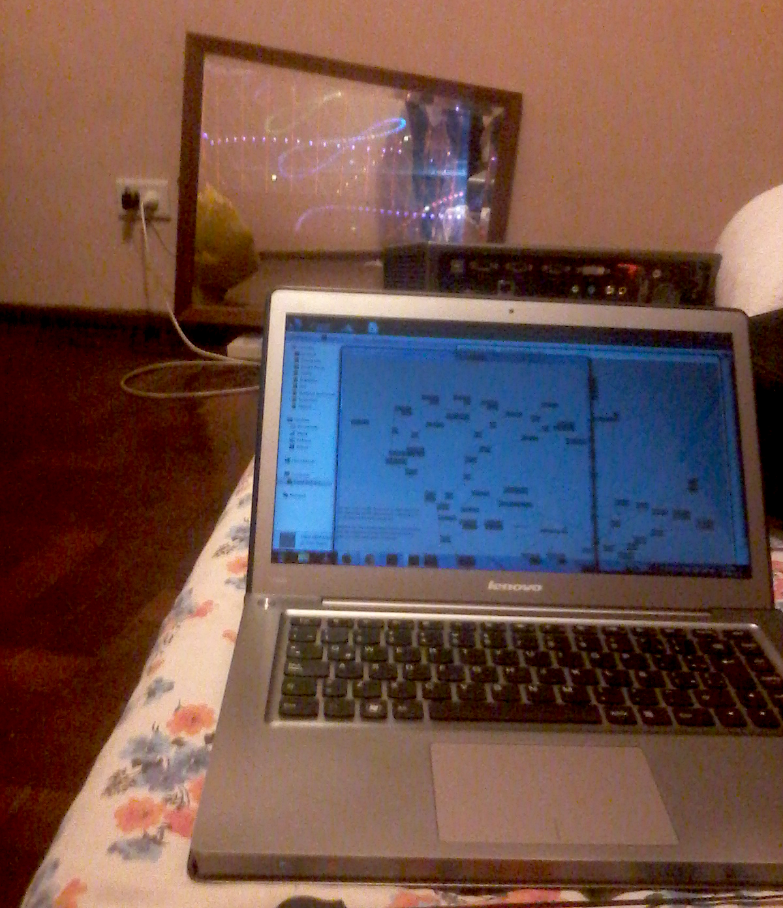
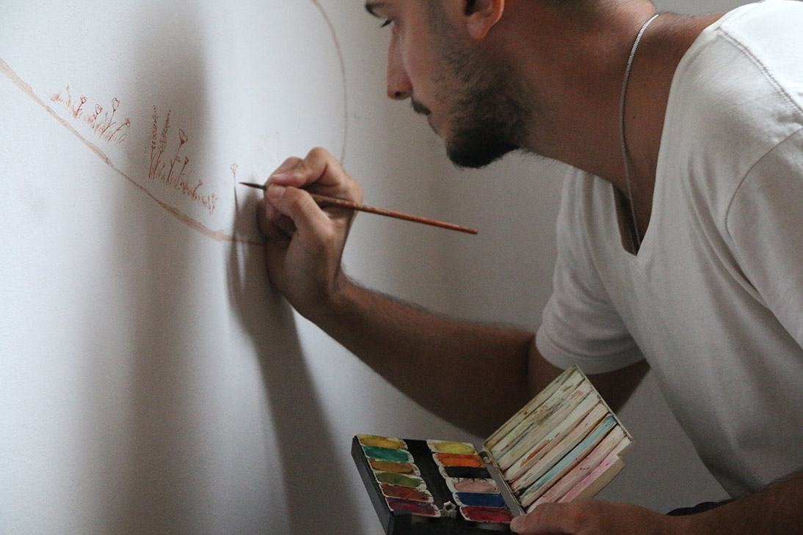
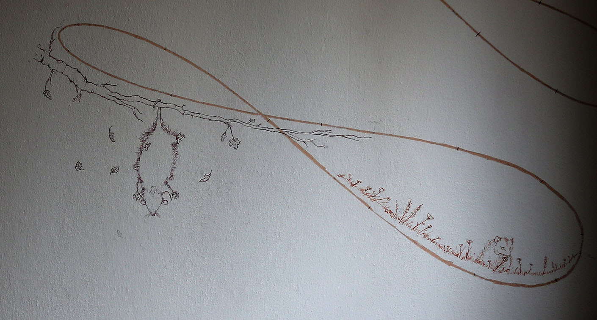
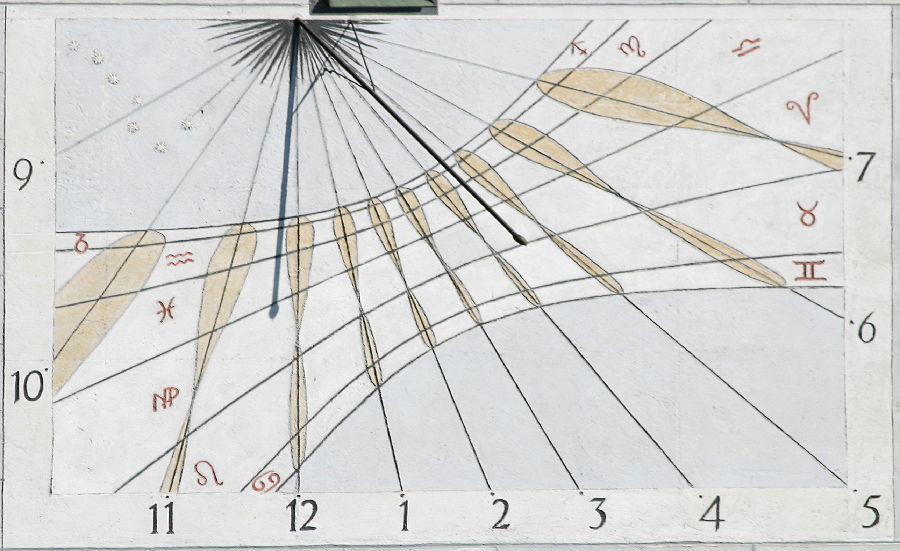

A homemade Sundial

In elementary school I told a friend that every day I was woken up by a sunbeam that filtered through the window and landed right on my eyes. Of course, it was a lie. It happened only once and at that moment I felt the need to make my story more exciting. The Sun takes a different path every day. The first day of October at 9:00 am the sunbeam passed trough my bed and the first of September the sunbeam went through my bed table.
Since the shadow of the window moves as the hours goes by and every day it goes trough a different path it is possible to make a clock. It is the basic principle of every sundial.
How hard could it be to make a sundial?
There is a tool that I used many times to make interactive audovisual instalations. It is a visual programming language called Vvvv. Amongst many other things it has a 'Sun' patch that takes time, latitude and longitude as inputs and it outputs the sun orientation at that moment.
Straight from the Wikipedia:

Using that patch I made a model to show where the sun would be at different times.
For example this is the path the sun is going to take at March the 3rd:
Instead of showing where the sun will be at each hour of the day it is possible to show where the sun is going to be at 10:00 am of different days across the year.
As months go by an infinity symbol is formed. That is the trail the sun will be doing in the sky for centuries to come.
Knowing the position of both the sun and the wall I had to calculate where the shadows are going to land in the wall
The full layout of the sun in the wall
The first of April the sun will take this path. Nore how at 12 noon the shadow is going to land on the floor

I sticked a little paper at the edge of the window to use it as the indicator or 'gnomon' and for some days, while I was putting the model together, I started marking the wall at the place the gnomon's fell and noting the hour and date. As I picked random moments to make the marks the end result was a constellation of points in the wall.
One night once the model was finished I used a projector to transfer the sundial's layout to the wall. I inputed the time and dates of the makings to test wether the calculated points matched with the real markings. The projected constelation aligned itself with the real one in an thrilling way. Finally the two ends met. The astronomical tables that the Sun patch was based on, my own calculations and the markings on the wall finally came together.

I replaced the paper gnomon with a translucent red paper
The areas in the 10:00 am curve that fell into the spring and fall season where ornamented with natural motifs designed and executed by Pablo Panza
 The finished Sundial

Later I found some sundials with a similar design like one in the Old Town Hall in Munich
In this case instead of dividing the curve of the hours by month they were divided by the zodiac periods
